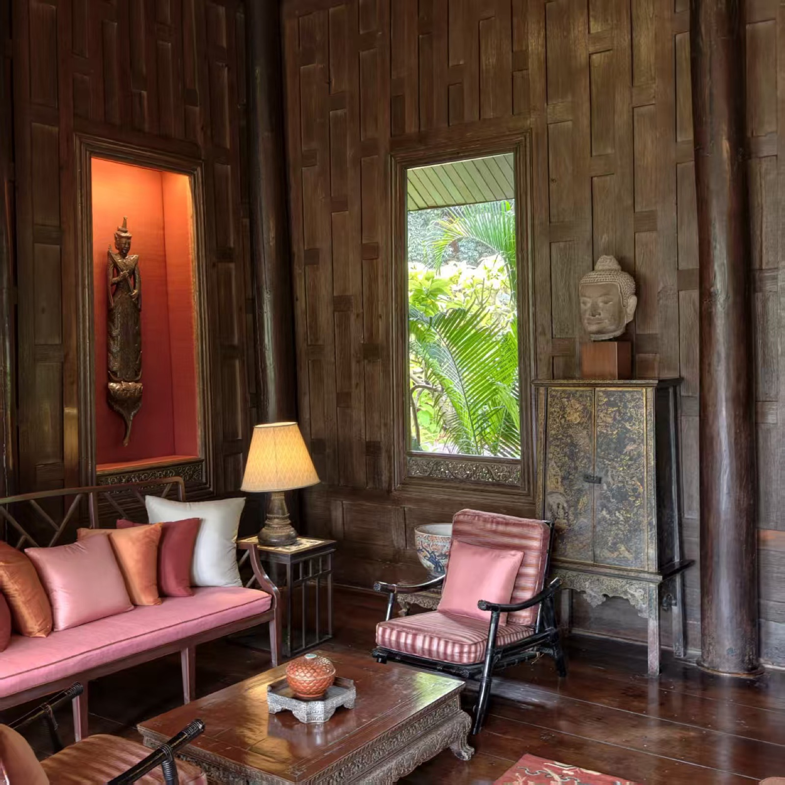
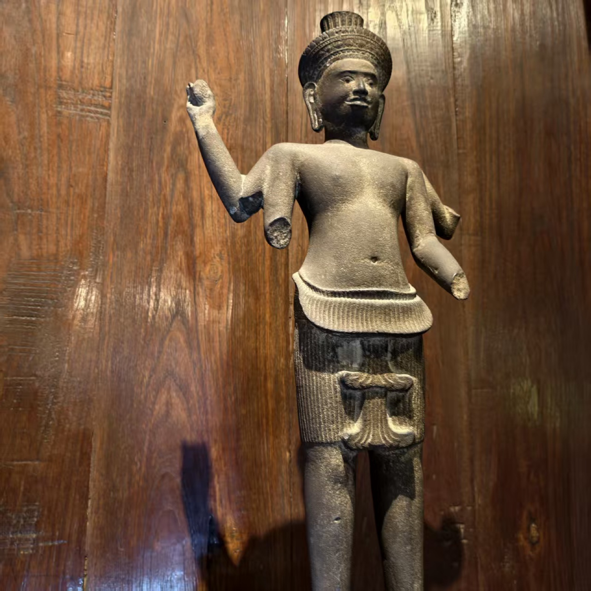
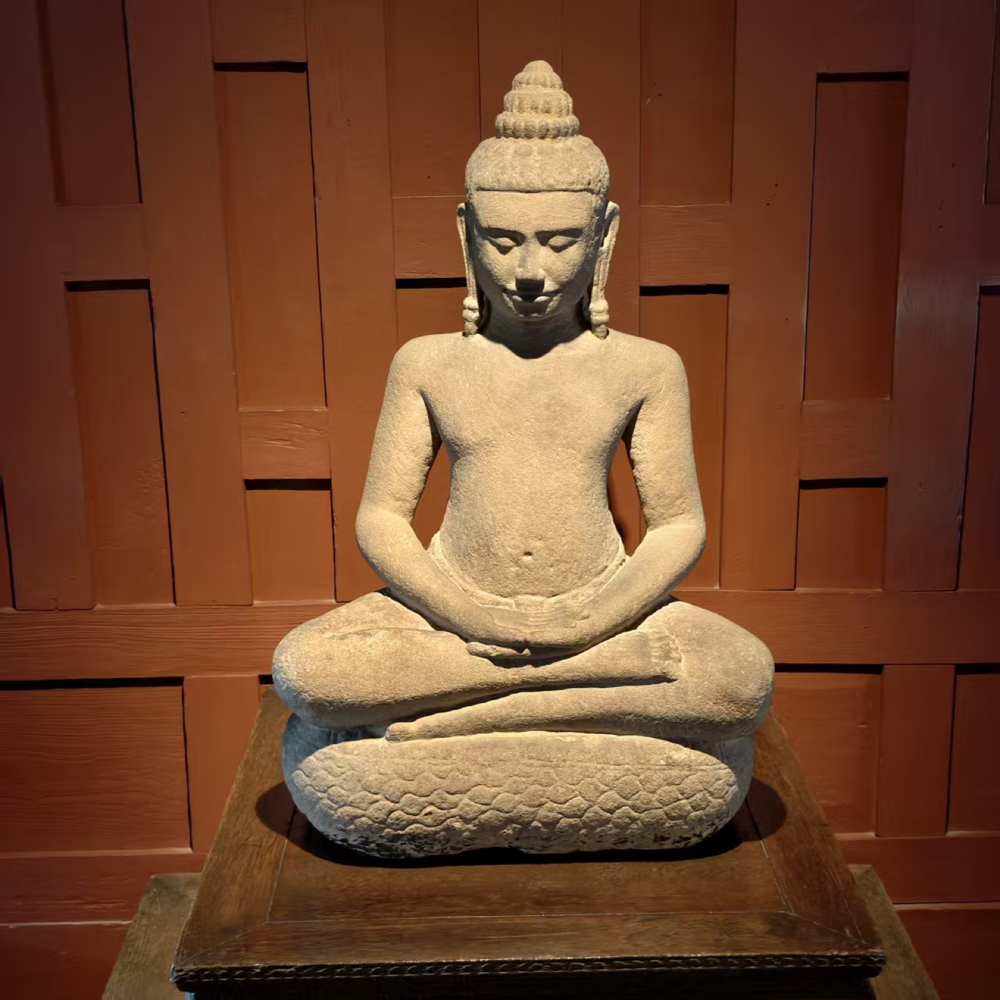
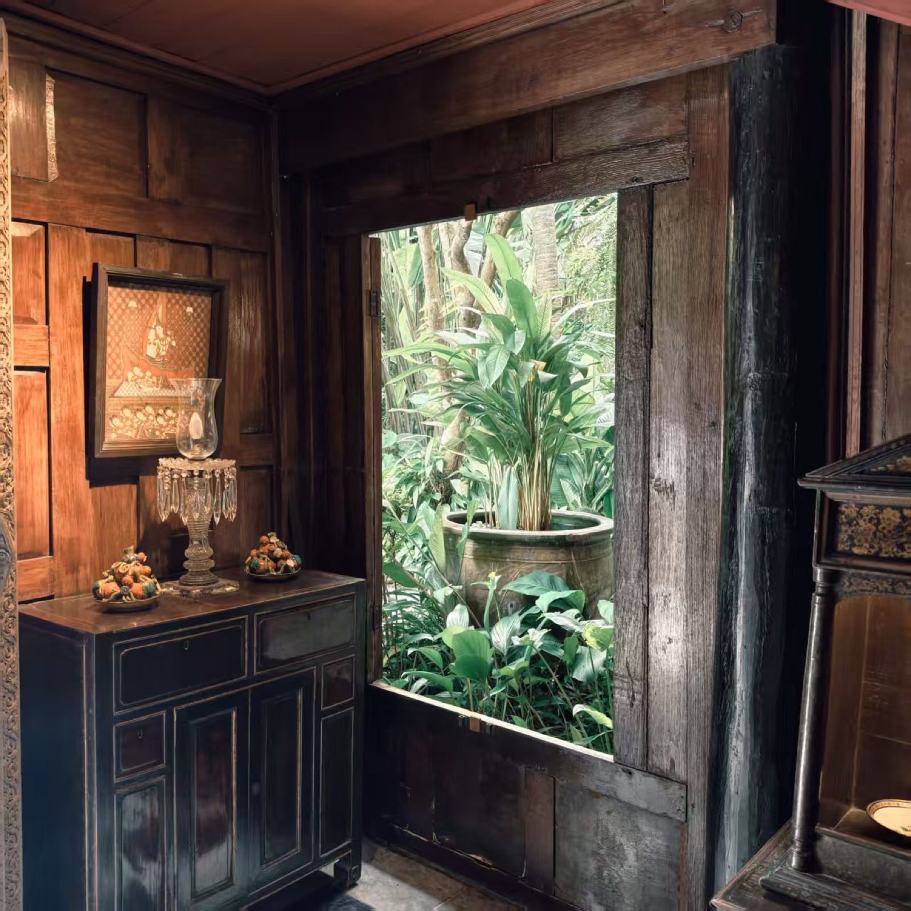
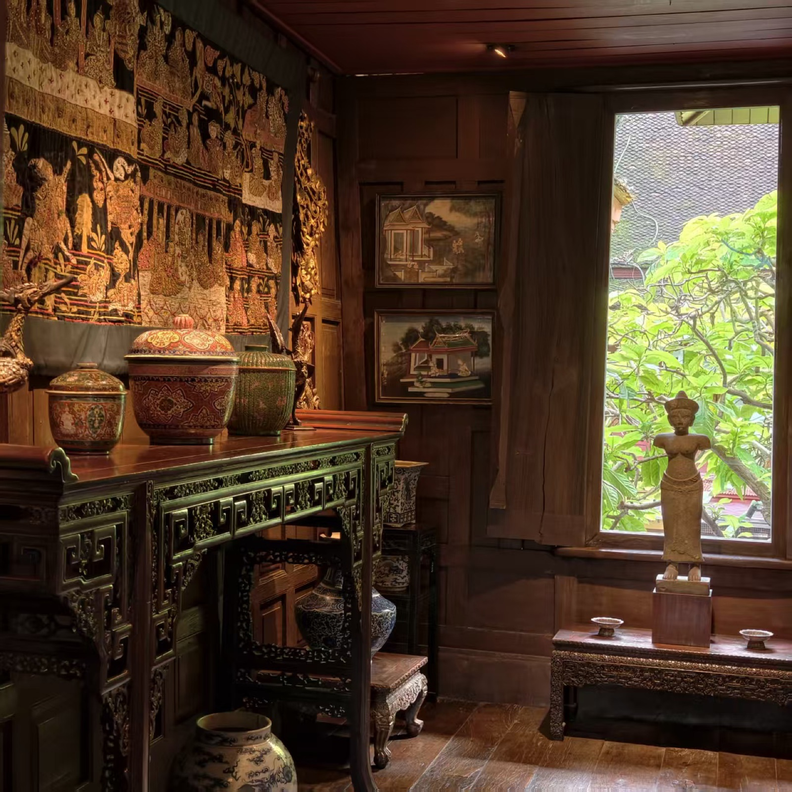
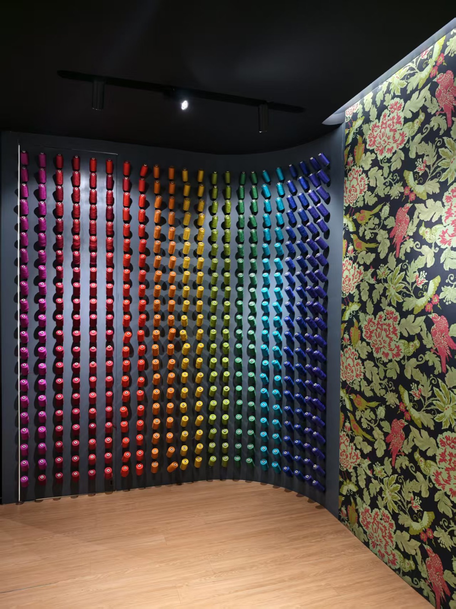
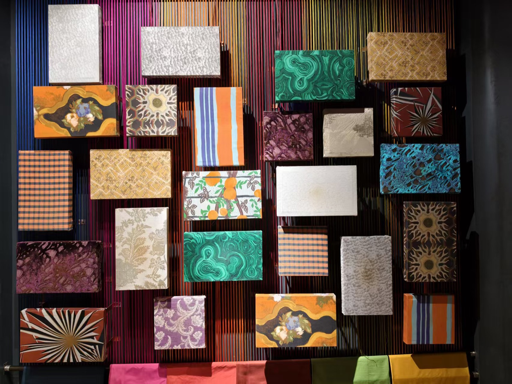

Jim Thompson
Jim Thompson 是美国人，学建筑出身，二战时给战略情报局（OSS，CIA 的前身）做事。战后他留在曼谷，接手了一门快要断气的生意——泰国丝绸，愣是把它重新做了起来。这栋房子建于一九五九年：他拆了大城府的六栋老柚木宅子，运到这里重新拼装。拼法也不守规矩，外墙翻向室内，把整副木构架都露了出来。

屋里是他的收藏。高棉的石雕、各时期的佛像、中国的瓷器、缅甸的织锦，和柚木墙挤在一起。不像是博物馆，倒像是主人只是出了趟远门。

一尊结跏趺坐的佛像，底下盘着一整条那伽——蛇王替打坐的佛陀挡雨的故事。

窗户推开就是热带花园。房子挨着运河，植物从四面八方长过来，屋里屋外只隔一层深色的木头。

一面墙的老织锦，底下的柜子里摆着彩瓷。

一九六七年，六十一岁的 Jim Thompson 在马来西亚金马伦高原散步时失踪，至今没有结论。房子留了下来，由基金会照看。参观动线的最后一站是一间商店，卖丝——他一辈子的事业，这么收尾也算合适。

